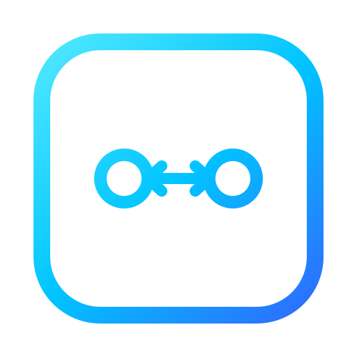

Continuously mirror senders/receivers across registries
Overview
NMOS Simple RDS Mirror continuously mirrors selected IS-04 senders/receivers across independent NMOS registries — not limited to a single source/destination pair, so one resource can be fanned out to several destination registries, or chained across more than two. Choose, per resource, between Passthrough (copies the resource as-is) and Transform (rewrites the multicast address and label via a per-destination proxy node). It only ever touches control-plane metadata — actual video/audio streams never pass through this tool.
It's built to survive the quirks of real-world registries — pagination edge cases on large registries, WebSocket disconnects — and runs either headless (plain Node.js) or as an Electron desktop app.
Features
node core/server.js) or in Electron — with tray residency and Windows autostartQuick Start
Download and launch
Get the portable .exe from GitHub Releases and double-click it. To run headless instead, use npm run core.
Register the source and destination registries
Add the NMOS Query API endpoints for the registry you're mirroring from and the one you're mirroring to.
Select what to mirror
In the Source pane, pick a sender or receiver and choose Passthrough (copy as-is) or Transform (rewrite address/label).
Run the job and monitor it
Check the mirrored result in the Destination pane. Anything that fails stays listed on the Errors page until it's resolved.
Things to Know
Firewall approval on first launch
Windows will prompt to allow NMOS Simple RDS Mirror.exe to communicate. Since a Transform job's proxy node needs to be reachable by other NMOS devices on the network, check both Private and Public networks.
Metadata only — no media
This tool only handles IS-04/IS-05 control-plane data — sender/receiver registration, SDP, and connection state. Actual video/audio streams flow directly from source to destination and never pass through this tool.
Chain-mirror guard is off by default
The setting that blocks selecting a resource that only exists on a registry because this tool mirrored it there is disabled by default. If you're building a multi-hop mirror chain, consider enabling it in Settings.